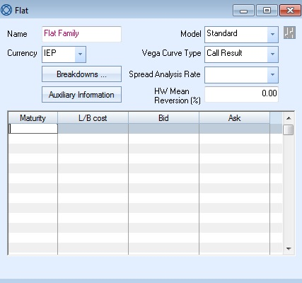

函数说明
GetCurveFamilyUIParams
函数功能说明
构建曲线族从UI端获得的参数界面
前端交互说明

Name：曲线族的名称，必选。该名称在以下界面中使用：
- 当特定曲线的族被分配给金融工具时，在金融工具窗口上使用。
- 在“利率”窗口的“曲线族”字段上，将特定曲线族与利率关联起来。
- 在“市场数据规则”窗口中，将曲线族与工具类型关联。
Currency：定义曲线族的货币，必选。
以下收益率曲线族的具体属性、用法、业务提炼的优点有待于在后续研究中完善
Model：定义曲线族模型，必选。可用选项如下：
- Standard（目前唯一选择）
Vega Curve Type：定义vega曲线类型，必选。可以用来模拟波动率变动时价格的变化。可用选项如下：
- Call Result
- Call Market
- Call Management
- Call Bid
- Call Ask
- Put Result
- Put Market
- Put Management
- Put Bid
- Put Ask
Spread Analysis Rate：定义用于价差分析的利率，必选。可用的选项是，Interest Rate中针对该货币定义的利率。
HW Mean Reversion(%)：定义用于Hull-White模型的mean-reversion rate 。
Intersest Rate：定义曲线族的基础利率。对于发布时间为T+1的利率(如SOFR)，此设置是必要的，以便于处理由于发布延迟而导致的fixing缺失情况。可用选项仅货币市场利率。
Breakdowns：收益率曲线系列分解窗口用于定义不同期限的收益率曲线系列。如果你为一种货币定义这些数据点，这些点将用于IR分类列表的参数VaR分析。在选定的细分市场中，金融工具会根据同一种货币的收益率曲线折现。如果没有为收益率曲线族定义风险因子列表，则使用违约利率细分，并将收益率曲线族风险映射到违约收益率曲线风险因素列表。（待完善）

Auxiliary Information：点击打开Auxiliary Data框，定义曲线族的波动率。波动性是通过为波动类型指定一个利率来定义的。为该利率定义的波动率被用作该曲线族中所有曲线的相关波动率。

-
Volatility Category：曲线族波动率，可选类型为：
- CDS Option Volatility
- Cap/Floor Volatility
- Caplet/Floorlet Volatility
- Swaption Volatility
-
Instrument：定义波动率所依赖的利率，可选。
Repo Curve Points List
- Maturity：回购曲线的到期日期，必选。
- L/B Cost：对应到期期限的回购利率的借贷成本，必选。
- Bid：回购的bid价，必选。
- Ask：回购的ask价，必选。
参数表
入参表：
| 序号 | 入参 | 入参说明 | 类型 | 是否必须 | 数据来源 |
|---|---|---|---|---|---|
| 1 | name | 曲线族的名称 | str | 是 | Input |
| 2 | model | 曲线族模型，option=['Standard'] | str | 是 | Input |
| 3 | currency_str | 曲线族使用的货币 | str | 是 | Input |
| 4 | vega_curve_type | vega-curve类型。它的曲线类型可以用来模拟波动率修改时的价格变化。Option=['Call Result', 'Call Market', 'Call Management', 'Call Bid', 'Call Ask', 'Put Result', 'Put Market', 'Put Management', 'Put Bid', 'Put Ask'] | str | 否 | Mehtod |
| 5 | breakdowns | 收益率曲线族细分窗口用于定义不同到期日的收益率曲线族 | matrix | 否 | Input |
| 6 | auxiliary_infomation | 辅助数据窗口定义曲线族窗口中每条收益率曲线的波动率。 | matrix | 否 | Input |
| 7 | spread_analysis_rate | 用于利差分析的利率。Option=[参数currency定义的汇率] | str | 否 | MarketData |
| 8 | hw_mean_reversion | 定义Hull-White的均值回归率。均值回归用于校准Hull-White模型。 | float | 否 | Input |
| 9 | repo_curve_points_list | 回购曲线点列表，包括：Maturity(回购曲线的到期日)、L/B Cost(与到期日相关的回购利率的借贷成本)、Bid(回购的出价)、Ask(回购的要价) | matrix | 否 | MarketData |
出参表：
无
函数隶属类型
该函数隶属Methods，用于定义同族曲线的共同特征。